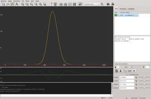

fityk
Dieser Artikel wurde für die folgenden Ubuntu-Versionen getestet:
Ubuntu 14.04 Trusty Tahr
Zum Verständnis dieses Artikels sind folgende Seiten hilfreich:
fityk  ist ein Programm zur Analyse von 2D-Datensätzen (X,Y) durch nichtlineare Kurvenanpassung. Es bietet zum einen eine grafische Oberfläche zum Betrachten und Anpassen der Datensätze, zum anderen aber auch eine Kommandozeile und eine integrierte Skriptsprache.
ist ein Programm zur Analyse von 2D-Datensätzen (X,Y) durch nichtlineare Kurvenanpassung. Es bietet zum einen eine grafische Oberfläche zum Betrachten und Anpassen der Datensätze, zum anderen aber auch eine Kommandozeile und eine integrierte Skriptsprache.
In fityk sind häufig benutzte mathematische Funktionen (wie z.B. Gauss-, Lorentz- oder Voigt-Funktion) sowie verschiedene Algorithmen zur Anpassung der Funktionen an die Daten bereits implementiert. Zusätzliche Funktionen können sehr einfach definiert werden.
fityk liegt zur Zeit nur in englischer Sprache vor (Stand: Nov. 2015). Der Quellcode ist auf Github unter der GPL2 frei verfügbar.
Installation¶
fityk 1.2.1 kann direkt aus den offiziellen Paketquellen installiert werden [1]. Neuere Versionen müssen selbst aus dem Quellcode kompiliert werden.
fityk (universe)
 mit apturl
mit apturl
Paketliste zum Kopieren:
sudo apt-get install fityk
sudo aptitude install fityk
Benutzung mittels grafischer Oberfläche¶
 Die grafische Oberfläche von fityk teilt sich in vier unterschiedliche Bereiche auf. Im Hauptfenster wird ein Streudiagramm des (X,Y)-Datensatzes dargestellt. Darunter befindet sich das Hilfsfenster, in dem die Abweichung der Datenpunkte von der Anpassung angezeigt werden. Ganz unten befindet sich die Kommandozeile mit dem Ausgabefenster direkt darüber. In den Tabs der Seitenleiste können die Datensätze sowie die entsprechenden, zur Anpassung verwendeten Funktionen und Variablen aufgerufen werden.
Importieren von Daten¶
fityk ist spezialisiert auf das Anpassen von 2D-Daten. Öffnet man eine Datei durch den Menüpunkt "Data -> Quickload", so versucht fityk automatisch das Dateiformat zu erkennen und den Datensatz einzulesen. Dabei unterstützt fityk neben Tabulator und Komma getrennten Wertepaaren (TSV- und CSV-Dateien) auch eine Reihe von Binärformaten (Details dazu im fityk-Handbuch ). Alle Zeilen, die mit einem Leerzeichen oder # beginnen, werden als Kommentarzeilen ignoriert. Befinden sich mehrere Datenspalten in einer Datei, steht im Menüpunkt "Data -> Load Data" ein weiterer Dialog zum Datenimport zur Verfügung. In diesem kann der Nutzer die (X,Y)-Spaltenzuordnung selber festgelegt. Daneben bietet dieser Dateidialog auch eine Diagrammvorschau.
Jeder neu importierte Datensatz erscheint mit einer Nummer in der Seitenleiste. Über diese Nummer kann der eingelesene Datensatz in der Kommandozeile angesprochen werden.
Anpassen eines Datensatzes¶
Um eine Funktion an einen Datensatz anzupassen, muss dieser zunächst in der Seitenleiste markiert sein. Dieser Datensatz wird dann als Streudiagramm im Hauptfenster angezeigt. Die gewünschte Funktion, die zur Anpassung verwendet werden soll, kann im Drop-Down-Menü in der Werkzeugleiste ausgewählt werden und wird mittels der "auto-add"-Schaltfläche hinzugefügt. Neue Funktionen können unter "Functions -> Function Manager" implementiert werden. Zu einem Datensatz können beliebig viele Funktionen hinzugefügt werden. Diese werden in der Seitenleiste im Reiter "functions" aufgelistet und können dort angewählt werden. Die Werte der Variablen der Funktionen sind im Reiter "variables" aufgeführt.
Anhand von Maxima, Minima oder Halbwertsbreiten von Peaks im Streudiagramm versucht fityk bereits gute Startwerte für die Anpassung auszuwählen. Die Startwerte für Position und ein Maximum können direkt am Graphen der Funktion oder - wie auch alle anderen anzupassenden Parameter - anhand der Variablenfelder in der Seitenleiste verändert werden. Variablen können durch das Drücken des Schlosssymbols von der Optimierung ausgeschlossen werden.
Die Anpassung kann durch "start fitting" in der Werkzeugleiste oder dem Menüpunkt "Fit -> Run" gestartet werden. Voreingestellt zur Optimierung der Funktionsparameter ist der Levenberg-Marquardt-Algorithmus. Andere Optimierungsalgorithmen können im Menü unter "Fit -> Methods" ausgewählt werden. Sollte man mit der Anpassung nicht zufrieden sein, ist die Möglichkeit sehr nützlich, mittels "Rückgängig" die Variablen auf die Ausgangswerte zurückzusetzen. Unter "Fit -> Info" finden sich neben den Optimierungsergebnissen die Standardabweichungen und Konfidenzintervalle der Variablen.
Möchte man, dass bestimmte Datenpunkte nicht in der Optimierung berücksichtigt werden, so können diese im "Data-Range-Mode" (
F2 ) durch Rechtsklick  und Ziehen deaktiviert werden. Diese Datenpunkte erscheinen grau. Aktiviert werden deaktivierte Datenpunkte durch die linke Maustaste
und Ziehen deaktiviert werden. Diese Datenpunkte erscheinen grau. Aktiviert werden deaktivierte Datenpunkte durch die linke Maustaste  und Ziehen.
und Ziehen.
fityk bietet nicht nur normale Funktionen für einen Untergrundabzug, sondern auch die Möglichkeit, den Verlauf des Untergrunds mithilfe eines kubischen Splines anzupassen und abzuziehen. Dazu wechselt man mit der Taste F3 oder über den Menüpunkt "GUI -> Baseline Handling -> Add Baseline" in den "background-mode". Daraufhin kann man beliebig viele Knoten des Splines im Diagramm platzieren. Letztlich kann der so definierte Untergrund durch "GUI -> Baseline Handling -> Substract Background" abgezogen werden.
Export der Anpassung¶
fityk kann sowohl das angepasste Spektrum oder auch nur die angepassten Parameter exportieren. Die verschiedenen Exportmenüs finden sich im Menüpunkt "Functions".
Fortgeschrittene Benutzung¶
Alle über die grafische Oberfläche zugänglichen Befehle können auch in der fityk-Kommandozeile oder über die Kommandozeilenversion cfityk ausgeführt werden. fityk hat eine eigene Skriptsprache, die sogenannte "mini language" (deutsch: Minisprache), implementiert. Die Syntax in der Befehlszeile lautet allgemein:
[[@ ...:] [with ...] command [";" command] ...] [#comment]
Die importierten (X,Y)-Datensätze werden nach dem Einlesen von fityk aufsteigend von 0 beginnend nummeriert und können anhand dieser ID mit vorangestelltem @ aufgerufen werden. Mittels with lässt sich ein Parameter vorübergehend nur für diese Befehlszeile ändern.
command ist das auszuführende Kommando. Ab einem vorangestellten # wird der Rest der Zeile als Kommentar interpretiert und ignoriert. Variablen werden in fityk mit vorangestelltem $ deklariert. Im folgenden Beispiel werden zwei Datensätze eingelesen, addiert und der addierte Datensatz mit einer Summenfunktion aus Gauss- und linearer Funktion angepasst.
@+ < '/home/user/xy_dataset.dat:1:2:'; # Einlesen der x-Werten aus Spalte 1 und y-Werte aus Spalte 2 @+ < '/home/user/xy_dataset_2.dat:1:2:'; # Einlesen eines zweiten Datensatzes @0 = @0 + @1; # Addieren der Datensätze @0 und @1 und überschreiben von @0 @0: $a0 = ~1; $a1 = ~2; # Deklariert Variablen @0: $gmax = ~5; $gcenter = ~2; $ghwhm = ~3; # Deklariert weitere Variablen @0: F = Linear($a0,$a1) + Gaussian($gmax, $gcenter, $ghwhm); #definiere die Anpassungsfunktion F als Summe einer Linearen und einer Gaussfunktion @0: fit; # startet die Anpassung
Das als Textdatei gewöhnlich mit der Endung .fit gespeicherte Skript kann in der GUI unter "Session -> Execute Script" ausgeführt werden. Daneben ist es in neueren fityk-Versionen auch möglich, minimale und maximale Beschränkungen der Fitparameter festzulegen. Dies ist mit der GUI nicht möglich. Mehr zur mini language steht im fityk-Handbuch unter Mini-Language .
Lua-Skripte¶
Benötigt man eine richtige Skriptsprache, um komplexere Anpassungen und Stapelverarbeitungen durchzuführen, so bietet fityk einen integrierten Lua-Interpreter. Um die fityk-Befehle zu benutzen, ist in Lua das Objekt F vordefiniert. Das folgende Beispielskript verdeutlicht die Benutzung und dient dazu, die Datensätze xy_dataset_1.dat und xy_dataset_2.dat zu importieren.
1 2 3 | for i=1,2 do F:execute(string.format("@+ < /home/user/xy_dataset_%d.dat",i)) end |
Lua-Skripte werden als Textdatei mit der Endung .lua gespeichert und ebenfalls über "Session -> Execute Script" ausgeführt. Weitere ausführlichere Beispiele und Hinweise zu Lua-Skripten finden sich ebenfalls im fityk-Handbuch .
- Erstellt mit Inyoka
-
 2004 – 2017 ubuntuusers.de • Einige Rechte vorbehalten
2004 – 2017 ubuntuusers.de • Einige Rechte vorbehalten
Lizenz • Kontakt • Datenschutz • Impressum • Serverstatus -
Serverhousing gespendet von